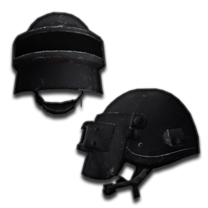
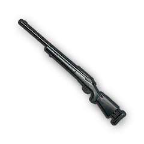
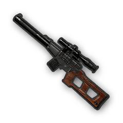
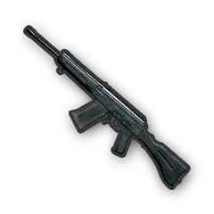
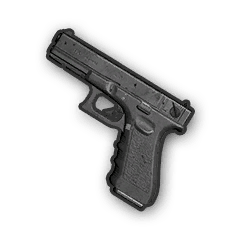
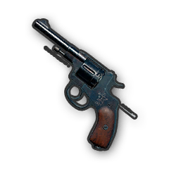
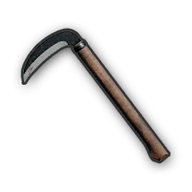

Welcome to PUBG MOBILE Inventory
Things to do:
1. know about the statistics of the Headgear, Body armour and Backpacks
2.know about the statistics of all the weapons and grenades
3. know about the consumables
4. know about the vehicles and their mechanics
Click on the above links to know more!!
PUBG Armoury
Here you will find the statistics of the different weapons and grenades available in the game, also the info about the Headgear, Body armour and Backpacks.
HEADGEAR
| IMAGE | NAME | ARMOUR | DAMAGE REDUCTION |
|---|---|---|---|
|
Motorcycle Helmet(Level 1) |
80 |
30% |
Military Helmet(Level 2) |
150 |
40% |
|
|  | Spetsnaz Helmet(Level 3) |
230 |
55% |
Helmets are a type of equipment in PUBG. Helmets provide head protection but they do not provide extra capacity. Head armor will last until fully destroyed by gunfire or other types of damage and will block the full damage even if it has only 1 point of armor left. It is useful to pick up a helmet no matter what level it is as it provides protection against instant-kills with head shots, most of the time.
For example, a level 3 helmet can still protect you from a headshot even if it's damaged.
BODY ARMOUR
| IMAGE | NAME | ARMOR | DAMGAE RFEDUCTION |
|---|---|---|---|

|
Police Vest(Level 1) | 200 | 30% |
| Police Vest(Level 2) | 220 | 40% | |
| Military Vest(Level 3) | 250 | 55% |
Vests are a type of equipment in PUBG. They provide basic protection and an increase in carrying capacity. Each vest increases the carrying capacity by 70 units. Body armor will last until fully destroyed by gunfire or other types of damage and will block the full damage even if it has only 1 point of armour left. It is useful to pick up a vest no matter what level it is as it provides protection against instant-kills with body shots, most of the time.
For example, a damaged level three vest is better than a full health level 2 vest.
BACKPACKS
| IMAGE | NAME | CAPACITY |
|---|---|---|
| Backpack Level 1 | 170 | |
| Backpack Level 2 | 220 | |
| Backpack Level 3 | 270 |
Backpacks are used to carry more items such as medical supplies, ammunition, grenades etc. They are only used to increase capacity they do not provide any protection.
Back to top
WEAPONS
There are different categories of weapons in PUBG :
1.Assault rifles
2.Sub Machine gun
3.Light Machine gun
4.Bolt Action Rifles
5.Designated Marksman Rifle
6.Shotguns
7.Pistols
8.Melee Weapons
9.Grenades
10.Crossbow
ASSAULT RIFLES(AR)
| IMAGE | NAME | DMG | PWR | SPD | ATTACH |
|---|---|---|---|---|---|
 |
AKM | 49 | 10,000 | 715 | 3 |
| GROZA * | 49 | 10,000 | 715 | 3 | |
| AUG * | 43 | 9,000 | 940 | 4 | |
| M416 | 43 | 3,500 | 880 | 5 | |
| M16A4 | 43 | 8,000 | 900 | 3 | |
| SCAR-L | 43 | 9,000 | 870 | 4 |
According to this table the AKM and GROZA have more damage due to their ammo type i.e 7.62mm ammo. The AUG is the best weapon along with all the attachments. The M416, SCAR-L, M16A4, AUG take 5.56mm ammo. Each weapon's magazine size is 30 bullets and after attaching extended mag they contain 40 bullets each. Each weapon has two modes-auto and single but the M16A4 has single and burst fire mode. According to some tests the AKM has the most recoil out of all the ARs ecluding the M16A4 beacuse it has burst mode and the AUG has the least recoil.
* AUG and Groza are crate only weapons.
SUB MACHINE GUNS(SMG)
| IMAGE | NAME | DMG | PWR | SPD | ATTACH |
|---|---|---|---|---|---|
| MICRO UZI | 26 | 5000 | 350 | 3 | |
| TOMMY GUN | 40 | 7000 | 280 | 3 | |
| UMP9 | 39 | 7000 | 400 | 4 | |
| VECTOR | 34 | 7000 | 300 | 4 |
Submachine Guns are great close-range weapons that have the accuracy of most Pistols but get the magazine size and fire rate of one of the Assualt Rifles. The TOMMY GUN and VECTOR take .45 ACP bullets and the UMP9 and MICRO-UZI take 9mm bullets.
LIGHT MACHINE GUN(LMG)
| IMAGE | NAME | DMG | SPD | PWR | AMMO | MAG |
|---|---|---|---|---|---|---|
| DP-28 | 51 | 715 | 10,000 | 7.62 | 47 | |
| M249 | 45 | 915 | 10,000 | 5.56 | 100 |
Light Machine Guns are essentially weapons that boast higher rate of fire over Assault Rifles and a slight increase in bullet damage, but with a much higher drop off in terms of range and ammo carrying capacity. While LMGs themselves can fire more bullets, they go through these bullets much faster, and because of how many of them there are, you go through them a lot faster too. This limits their usefulness dramatically.
BOLT ACTION RIFLES
| IMAGE | NAME | DMG | SPD | PWR |
|---|---|---|---|---|
| AWM | 120 | 945 | 40,000 | |
|  | M24 | 79 | 790 | 20,000 |
| KAR 98-K | 74 | 760 | 16,000 |
Sniper Rifles are the ultimate weapons when it comes to range and power. In general, these rifles suffer from low magazine sizes and a cripplingly low rate of fire, but are redeemed by their high damage and extreme range capabilities. Due to the small magazine sizes and slow rate of fire, one must use these rifles with extreme caution, as one shot missed could spell the end for the user, and multiple shots missed means a long time of being vulnerable while reloading or switching weapons. According to test results the AWM does the most damage but one downside is that it is a crate only gun. The AWM can take out a level 3 helmet with one shot only, and takes 2 shots to take out level 3 vest.
DESIGNATED MARKSMAN RIFLES(DMR)
| IMAGE | NAME | DMG | SPD | PWR |
|---|---|---|---|---|
| MINI-14 | 46 | 990 | 10,000 | |
| MK14 | 61 | 853 | 20,000 | |
| SKS | 53 | 800 | 20,000 | |
| SLR | 58 | 840 | 20,000 | |
|  | VSS | 41 | 330 | 20,000 |
DMRs, or Designated Marksman Rifles, are weapons between the Assault Rifles and Sniper Rifles categories. Broadly speaking, they've got just short of the range of a sniper rifle, and just slightly higher damage than an assault rifle, albeit with a slightly lower magazine size. Functionally speaking, they're a great short to medium range precision rifle, but they're not that great in assault situations.
The VSS takes 9mm bullets and the MINI-14 takes 5.56mm and the rest takes 7.62mm bullets. The MK14 and the VSS have two modes- single and auto. The SKS , MINI-14 , SLR are semi automatic rifles. These have reasonable fire rates .The VSSs has its own type of scope. The rest take all the scope attachments.
SHOTGUNS
| IMAGE | NAME | DMG | SPD | PWR |
|---|---|---|---|---|
|  | S12K | 22 | 350 | 5,000 |
| S1897 | 24 | 360 | 5,000 | |
| S686 | 24 | 370 | 5,000 | |
| SAWED OFF | 20 | 300 | 5,000 |
Shotguns are weapons designed to fire shell cartridges that are different from normal bullet cartridges. Shells are usually loaded with a kind of pellets that can vary in size depending on the desired application. The shell is loaded with a wad that acts as a wall, pushing the pellets or payload out of the shell cartridge. This means that most rifles used for shooting shotgun shells uses normal barrels without rifling which makes them less effective for shooting bullets designed for rifled barrels. Because of the spread of the pellets, the shotgun is less useful over larger distances, as the traveling projectiles tend to travel away from the center of the predicted bullet path eventually covering the area much like a cone shape. With an adjustment of the barrel using a choke, the rifle can direct most of the pellets in a more narrow path, making the shotgun more effective even at medium ranges.
PISTOLS
| IMAGE | NAME | DMG | SPD | PWR | AMMO |
|---|---|---|---|---|---|
|  | P18C | 28 | 375 | 7,000 | 9MM |
| P1911 | 41 | 250 | 6,000 | .45 ACP | |
| P92 | 35 | 380 | 7,000 | 9MM | |
|  | R1895 | 55 | 330 | 8,000 | 7.62MM |
| R45 | 55 | 330 | 8,000 | .45 ACP |
P18C or the Glock has two firing modes i.e single and auto. The best powerful pistol is R1895. The best overall pistol is P1911 with an extended mag. Pistols are great secondary weapons, but when it tight situations when you dont have any weapons they can also function as primaries. Because they do decent damage at decent range, they're sort of an "all around okay" weapon. Replace with an actual main weapon as soon as you can, though, because the limited ammo carry and damage rating will harm you in the long run.
MELEE WEAPONS
| IMAGE | NAME |
|---|---|
| PAN | |
| MACHETE | |
| CROWBAR | |
|  | SICKLE |
Melee weapons are often a weapon of last resort - they don't have any range and have poor "rate of fire". That being said, if you can get the drop on your enemy, you can absolutely use these weapons to great effect, getting a relatively easy kill. That's hard to do, though, so as said before, you should really consider them sidearms or weapons of last resort. Pan is the ultimate melee weapon it does the most damage. You can use it to kill the last enemy for a chicken dinner or use it troll enemy or ninja momments.
GRENADES
| IMAGE | NAME |
|---|---|
| FRAG GRENADE | |
| SMOKE GRENADE | |
| FLASH GRENADE | |
| MOLOTOV COCKTAIL |
Grenade are very useful in diffenrent scenarios. Frag genades and Molotov cocktails are used to clear out buildings. Smoke grenades are used to hide yourselves in the open, hide the air drops to easily loot it and kill other incoming enemies. They are also useful to revive downed teamates in the open. Flash grenades as the name suggests are used to blind your opponents and advance them. We can also use them to advance into buildings.
CROSSBOW
| IMAGE | NAME | DMG | SPD | PWR |
|---|---|---|---|---|
| CROSSBOW | 105 | 160 | 8,000 |
CrossBows are a decent weapons, but only for very specific purposes during the end when there are less players alive. Crossbow does a one shot headshot kill with level 3 helmet or lower. These are can be used to kill enemies silently. Bows don't make much noise, so they're great to use when initially taking on a team, as a good shot or two can take out one member without giving away where you actually are. That being said, try to trade out bows when you can for better ranged weapons unless you're using a very specific defensive stratergy. Crossbow shoots only one crossbow bolt at a time. It can take 2 attachments i.e a sight and a quiver(helps to reload the bolt faster).
To know more strategies or to know differents loadouts for different scenarios and for other tips and tricks click on the link below.
Back to top
CONSUMABLES
1.BANDAGES
2.FIRST AID KIT
3.MED KIT
4.PAINKILLERS
5.ENERGY DRINK
6.ADRENALINE SYRINGE
7.GAS CAN
| IMAGE | NAME | CAPACITY |
|---|---|---|
| BANDAGES | 2 | |
| FIRSTAID KIT | 10 | |
| MED KIT | 20 | |
| PAINKILLERS | 10 | |
| ENERGY DRINK | 4 | |
| ADRENALINE SYRINGE | 10 | |
| GAS CAN | 20 |
Each Bandage apllied restores 10 health over 4 secs. The First Aid kit instantly restores 75 health. The FirstAid kit takes 6 secs to apply. Both the bandages and the firstaid kit only restores 75 health. But the Medkit restores 100 health but it takes 8 secs to apply. Painkillers,Energy Drinks,Adrenaline Syringe are caled boosters. They increase the characters boost to help increasing stamina and restore health slowly. Painkillers incease the character's boost by 60, it has 6 secs of cast time. one painkiller lasts for 3 mins restoring 40 health. Energy Drinks increase the character's boost by 40, it has 4 secs of cast time. one energy drink lasts for 2 mins restoring 23 health. Energy Drinks have a capacity of 4 where as Painkillers have a capacity of 10 hence it is more reasonable to carry more Energy Drinks than painkillers because they occupy less space. Adrenaline Syringe increase the character's boost by 100, it has 6 secs cast time. one Adrenaline Syringe will last for 5 mins regenerating all the health and an extra 6.2% movement speed increase. one Adrenaline Syringe is equal to consuming two Painkillers or one Painkiller and two Energy Drinks.
Back to top
VEHICLES
The Buggy is an open frame vehicle with a smaller engine than the UAZ or other vehicles, although it is still powerful enough to drive up a slope after being parked on one. While the engine is smaller, the frame is much lighter, meaning the buggy is relatively fast, albeit highly exposed to incoming fire, lacking any paneling or armor plating. Health=1540 Top Speed=100 kmph |
 |
A motorcycle without a sidecar. It seats a driver and a passenger. Speed is the only protection it provides, outclassing all other vehicles in this aspect. Combined with its light weight, it is an extremely fuel efficient vehicle that can prove useful for much of the game.Can be tilted forward in mid air using 'left control' and backwards using 'space.' Health=1052 Top Speed=152 kmph |
 |
A trials-style motorbike equipped with a side-car. It seats a driver and two passengers and is one of the fastest vehicle in the game, currently. It has very good traction to the road, however, it can be flipped easily and currently kills all occupants instantly if they fall off of it. It has very low fuel consumption, at least half the current rate of the other vehicles in-game. Health=1025 Top Speed=130 kmph |
 |
The Dacia can appear in a range of different colors.Being a sedan, it has subpar off-road performance, with poorer traction and slower acceleration compared to when driving over clear dirt paths or roads because the car in reality is fairly light and it only has 54 hp.On level roads, the Dacia's speed can average at around 85-90 km/h, holding the boost key will bring the vehicle to a top speed of 110-115 km/h at the cost of increased fuel consumption. Health=1820 Top Speed=139 kmph |
The UAZ (Closed Top) is a mid-sized, closed frame vehicle that is entirely closed from the exterior area. Because of this, it provides superior defense against small arms. It is considered one of the best vehicles in the game due to its speed, off-road capability, high fuel and durability. Health=1820 Top Speed=130 kmph |
The UAZ is like a hybrid between the Buggy and the Jeep. The entire passenger compartment is exposed to the elements, with only a roll cage and doors to serve as some form of protection. Fuel consumption when at full throttle is quite high, which negates much of the benefit of the vehicle. It is best used off-road, moving between locations, though it is not recommended to drive near major locations as the ignition sound alone can be heard up to 125 meters away. Health=1820 Top Speed=130 kmph |
The Pickup can be seen as Miramar's equivalent of the UAZ - both have closed and open topped variants, and both have roughly the same top speeds. Its high ground clearance and engine torque make it suitable for tackling Miramar's rough and bumpy desert terrain, being capable of hill starts even on fairly steep inclines, although its stopping distance leaves more to be desired. It also has a wide turning circle, even wider than the UAZ, making it a poor choice when navigating tight turns and corners. Health=1720 Top Speed=110 kmph |
The vehicle is based off of the Mitsubishi Mighty Max (1992 - 1996) The Rony holds up to 4 passengers and excels at moving across Sanhok's hilly landscapes. Health=1720 Top Speed=110 kmph |
The Mirado is a classic muscle car: a fast, four-seat coupe/sedan that’s limited to Miramar. It can be found around downtown areas and main city streets. Think of the Mirado as a compliment to the other unique vehicles on Miramar: The van is extremely sturdy, but slow and ineffective when taken off-road; The pickup is great for off-road travel; And the Mirado is the fastest way to blaze down a highway. On level roads, the Mirado's speed reach up to 152 km/h. Health=1820 Top Speed=152 kmph |
The vehicle is based off of the Volkswagon Type 2, it was most commonly called the Bus (US) or Camper (UK). The Van is a six-seat vehicle, it has low maximum speed and driving force but it has the highest HP in the game. Therefore, the Van can be useful in various tactical situations. It is useful for teams, as it’s large storage capacity give it lots of tactical positioning. Health=2010 Top Speed=100 kmph |
The speedboat is a relatively quick moving craft, but there's a huge trade off as the boat has no cover or protection against ranged attacks. Because of this, while it's a great vehicle for navigating coastal features (and especially dealing with constricting play area), it is very dangerous to operate. Health=1520 Top Speed=90 kmph |
The Aquarail is a jet ski water type vehicle in Battlegrounds. This watercraft can be found on Erangel,Miramar and Sanhok.The Aquarail can hold two players and is significantly more maneuverable than the standard boat, the PG-117. Health=1520 Top Speed=90 kmph |
Back to top
Go back to homepage,
<- Back